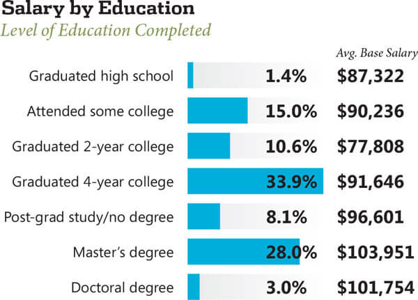
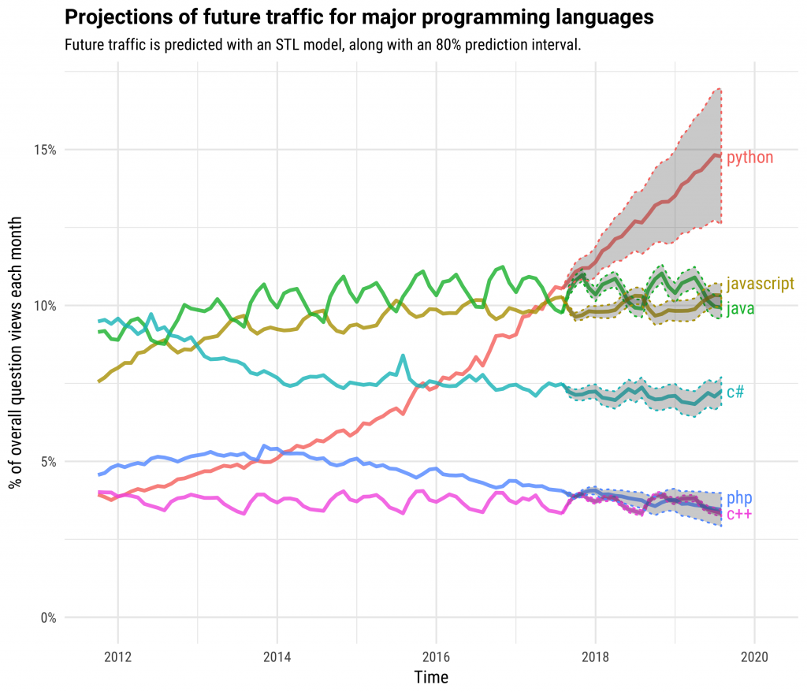
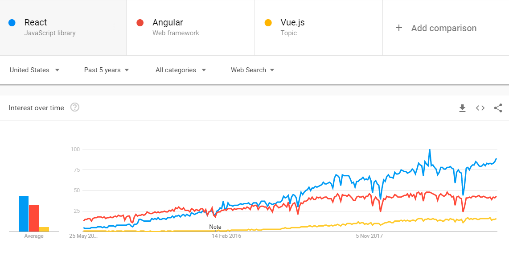

There has never been a better time to become a web developer than now. The United States Bureau of Labour Statistics predicts an increase of job postings by 15% between 2016-2026, in comparison to 7% average across all occupations. According to ZipRecruiter the current average salary of a Web Developer in United states is $74,080 with top 1% earning $123,000 to $133,000. Among the general specializations of web developers (front-end, back-end and full-stack); full-stack developers on avereage are paid the highest, which is logical since they have to stay up-to date on both back-end and fron-end technologies.
What kind of person do I have to be, to become a web developer in 2019?
A person that likes to problem solve, create things, pays attention to detail and does not get frustrated easily. Do I need to be good at math? It depends. Most jobs in web development do not require any math knowledge beyond 9th grade, however people who are bettter at math tend to pick up more advanced concepts like Big Data and Machine Learning more easily. This does not mean that if you didn’t study hard sciences or computer science you cannot become a web developer; I know several talented web developers that had background in Music or the Arts for example. Do I need a degree? Not at all, but like with any training, it helps. Some big name companies may toss your resume if you don’t have a degree, but most will overlook this deficiency if you have done interesting side projects or even better, if you have experience.

My experience in the industry, taught me that education is not the greatest factor in becomming a successful web developer. There are plenty of developers that have degrees and are terrible at what they do and there are plenty of developers without a degree who are legends in the field. Getting a university degree in this field will certainly be a boost, but what you do after that is really up to you. If you are passionate about learning, after 2-3 years of experience whether you have a degree or not, strarts to matter much less. So what are the success factors in web development? Enthusiasm, grit and easy-going personality. Enthusiasm is an obvious one; developers who keep themselves up-to-date on their own time and read about their field, tend to have broader skillsets which translate into higher salaries. Grit is important in many fields, especially those that require prolonged periods of thought; developers who do not easily give up on a problem tend to learn more quickly, develop better mental endurance and usually progress faster in their careers. Last, but equally important, is personality. If you are the type that does not work well with others, you may struggle in this field in the long-term. Developers who have a good personality are generally open-minded, flexible and are a pleasure to work with. They check their ego at the door and value the input and opinions of others. Listening to the opinions of others allows them to learn more quickly and co-workers tend to speak well of them, leading to promotions and salary increases. To put it simply, developers that do not think it is important to be ‘right’ all the time, have better careers.
So, if you read the above and think you have what it takes, read on.

Choosing what to learn
Noobie developers spend a bit too much time on this, decision of choice has always been a time-waster. The important thing is to start learning and doing as soon as possible. As long as you choose one of the more popular tech stacks, you should have no trouble job-wise; plus once you know one you can always switch later. To become a full-stack developer you will need to learn at least one front-end framework and one back-end framework. Back-end frameworks run on the server, talk to the database and crunch data. Front-end frameworks generate the UI and run in the browser. What are the top tech stack as of 2019 you may ask?
Top back-end frameworks (From most recommended to least)
Java based frameworks: Java which runs on the Java Virtual Machine (JVM) has been around for a long time and is quite mature. It isn’t as popular as it used to be in new projects, but it has a massive foothold in the corporate world. So if you are targeting a job at the big banks or any other Fortune 500 company, there is a good chance they are using Java. Even though most cool kids these days are not using Java for their side projects, there are numerous hot programming languages that have been created that target JVM. This means that if you are comfortable with Java you should have no trouble transitioning to one of these newer languages. Some of these include: Scala, Kotlin and Groovy. That being said, if you decide to focus your learning on JVM supported languages, I still recommend starting with Java because its vast community online and thorough documentation will serve you well when learning your first language. Once you have a decent grip on the language, focus on one of the popular web frameworks for Java. Spring and Struts are good choices.
Python with Django framework: Python has one of the fastest growing communities on the internet and is considered one of the hottest languages in the industry right now. Websites like Instagram, Pinterest and Disqus are great examples of websites running on Django. While not quite as mature as Java and C# based frameworks, Python community is very active and the open source community is very strong.

C# and ASP.NET Core: C# which runs on the .NET Framework has been around for almost as long as Java and is a very mature platform with one of the best documentations in the industry. C# is known for its friendly community and excellent tools developed by Microsoft, which in recent years have mostly been free. ASP.NET framework has undergone a radical transformation in recent years, it has been rebuilt from scratch as ASP.NET Core and is now fully Open Source. The new framework has brought about massive performance improvements and cross-platform capabilities; thus it is recommended that ASP.NET Core is used for all new projects. C#’s popularity was held back by not embracing the Open Source community in its earlier years, but after Open Sourcing the C# compiler and more recently the .NET Framework there is plenty to get excited about. Popular website that run on ASP.NET include: Stackoverflow, MarketWatch and VisualStudio.com.
JavaScript and Node.js+Express: Javascript has been around for quite some time, mostly in the realm of the browsers, to make websites more interactive. This has changed about 10 years ago when NodeJS environment was created, which allowed JavaScript to run outside of the browser. Node.js was built on Google’s V8 JavaScript engine and changed the way developers think about JavaScript. The open source community developed numerous web frameworks which made server-side development using JavaScript significantly easier. Express is one of the most popular web frameworks that run on Node.js and if Node tickles your fancy I recommend starting there. Before getting started with Node.js I do recommend spending a good amount of time learning JavaScript alone and building a strong foundation there; learning curve for Node.js is quite steep for those not comfortable with JavaScript. Popular websites that run on Node.js and Express include: MySpace, Ghost CMS and Ancestry.
PHP: Is a very mature language that has come a long way since its debut over a decade ago. It is not known to be a very elegant programming language, but it is very easy to pick up and the online community is absolutely massive. Historically PHP web-frameworks have not been known to be very performant, but this has changed in 2015 with the release of PHP 7, which essentially doubled its performance. Recent benchmarks show that PHP 7.X.X is on par with Node.js in requests served per second. Currently, it appears that the PHP community is here to stay and with giants like Wordpress and Yahoo using it, support will be around for a long time. Laravel and Zend are popular web-frameworks that use PHP and either one will serve you well if you choose to go down the PHP path.
Ruby on Rails: Ruby on Rails web framework which uses Ruby as its programming language, is a perfect example of a technology that imploded and fell behind. On the surface Ruby is a fantastic language, it is known for being very readable, easy to understand and easy to write. Unfortunately, there are some aspects of Ruby on Rails framework that reduced its adoption significantly. First, its very opinionated community has lost many of its significant open source contributors. Second, its mediocre performance is significantly behind any of the web frameworks listed above. It was for this reason Twitter, has moved away from Ruby on Rails to Java/Scala. Similarly, linkedIn also moved away from Ruby on Rails and on to Node.js. Unless, you already have an offer ready for a job using Ruby on Rails, I do not recommend starting with this framework in 2019.

Summary:
| Metric | Java | Python | C# | Node.js | PHP | Ruby on Rails |
|---|---|---|---|---|---|---|
| Jobs on Indeed (New York State) | 1649 | 1736 | 1174 | 488 | 662 | 180 |
| Jobs on LinkedIn (New York State) | 1000+ | 495 | 553 | 1000+ | 464 | 62 |
| Jobs on Indeed (Hong Kong) | 903 | 358 | 328 | 192 | 423 | 35 |
| Jobs on LinkedIn (Hong Kong) | 73 | 13 | 41 | 116 | 75 | 2 |
Top front-end frameworks (from most recommended to least)
React: In the world of front-end, having React on your resume is the best you can do for yourself. When React first came out it was very fast, and over time it became even faster. Newer versions of React have added innovative ways of caching and lazy-loading features and it looks like TypeScript is gaining adoption in the React community as well; it’s safe to say React has matured vary well and is here to stay. Unfortunately, React is not the easiest front-end framework to learn, especially if it is your first. React uses JSX syntax out of the box, which can be awkward for newbies because it mixes javascript with html-like syntax. The React community can be somewhat devided on best practices, so don’t be surprised when one tutorial recommends a pattern or library that another tutorial does not follow. React’s flexibility can be a gift and a curse while learning, but this flexibility is also what most developers love about this framework. React is an open sourced framework backed by Facebook, with a very active cummunity of about 1300 contributors on Github at the time of writing. Companies that use React include Facebook, Instagram and Netflix among others.
Angular: There was a time not long ago, when Angular was the coolest thing on the technological block. React definitely took over the top spot, but Angular still has a large, active community of 935 contributors on Github. It was the first framework to embrace TypeScript and it is well regarded in the corporate world. Angular’s approach is more strict than React’s, it has a specific and maybe “opinionated” way of developing, which can be gift and a curse. Some developers agree that Angular framework is somewhat over-engineered in comparison to React and especially Vue.js. Be wary of the older angular.js (note the js in the name), which refers to the first version of Angular which is vastly different from Angular 2 and up. Companies that use this framework include BMW, ETrade, Wix and VmWare.
Vue.js: This is my favorite framework, so I may be biased. I really like the minimalistic syntax of Vue.js, it is one of the most performant JS frameworks currently available and it’s also the lightest in terms of Kilobyte footprint. It was created by a former employee of Google, who wanted to take the best parts of the existing frameworks and combine them in a minimalistic form. In terms of popularity, Vue.js is still no where near Angular or React, but it is climbing fast. Its growth has been especially impressive Asia, where companies like Alibaba, Baidu and Expedia are making use of this framework. If getting a job as soon as possible is a priority for you, I would still recommend learning Angular or React first. If landing a hip job at a startup is a priority for you, then Vue.js will make you stand out. Vue.js currently has 275 contributors on Github.
Summary:
| Metric | React | Angular | Vue.js |
|---|---|---|---|
| Release | 2013 | 2010 | 2014 |
| KB Footprint | 133 KB | 566 KB | 59 KB |
| GitHub Contributors | 1300 | 935 | 275 |
| Jobs on Indeed (New York State) | 1037 | 747 | 150 |
| Jobs on LinkedIn (New York State) | 1000+ | 1000+ | 300 |
| Jobs on Indeed (Hong Kong) | 282 | 184 | 80 |
| Jobs on LinkedIn (Hong Kong) | 57 | 119 | 30 |

So, I picked my learning path, now what?
There are many ways you can hone your skills, but to get an interview you will need to put in some time. If you think the todo list you created from a tutorial is going to be enough, I doubt it. Pick the technology stack you are best at and build something I wouldn’t find in tutorial sites. To prove to me that you know something, you need to be able to create something on your own, not reproduce something from a guide. The best way to do this is to pick an idea on your own and create it; be wary that you are still new, so don’t pick the next stock market trading platform as your idea. Pick something challenging but doable within a week or two or three; a recipe website that stores recipies in the database and allows image uploading would be a good start, or maybe a repository of all the basketball players in the NBA with adding and sorting capabilities.
To get any entry-level web dev position most interviewers are interested in seeing that you can create some sort of CRUD (Create, Read, Update and Delete) application. This demonstrated that you have some basic knowledge of a back-end technology and most likely some knowledge of databases. If you can throw in React or Angular or Vue on the front-end, they will really be impressed. So, if you can demonstrate these things in your pet application and be able to explain how you did it (to make sure that your wiz-dev uncle didn’t do it for you) you have a solid chance of getting an interview.
Obviously, the more you can show the better, but a pet project that demonstrates what you are capable of will go a long way, and as a bonus will sharpen your skillset as well. Another tip I can give you, is to spend a few days and make a good resume. You won’t have too much to put at this point of your career, but mentioning your pet projects while providing your github account as proof, as well as listing the online courses and learning websites you have used, will help. The point of your resume at this stage is to demonstrate your enthusiasm on paper, any experienced developer or technical manager will see where you are as a developer. What they want to see, is not who you are right now, but who you are going to be.
Lastly, make sure you can explain any technical terms you have mentioned on your resume. You won’t believe how many people I have interviewed that mentioned MVC for example, and when esked to explain what it is, couldn’t, at all. For a junior developer position, the interviewer is not looking for anything in depth, but if you cannot explain something you have mentioned four times in your resume, you are likely to have a very short interview.